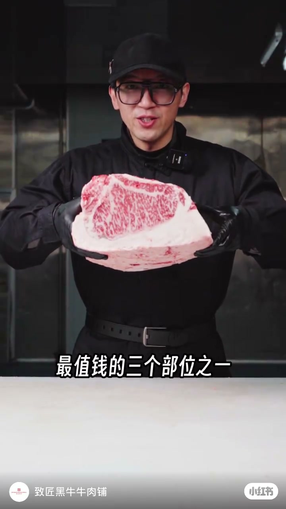
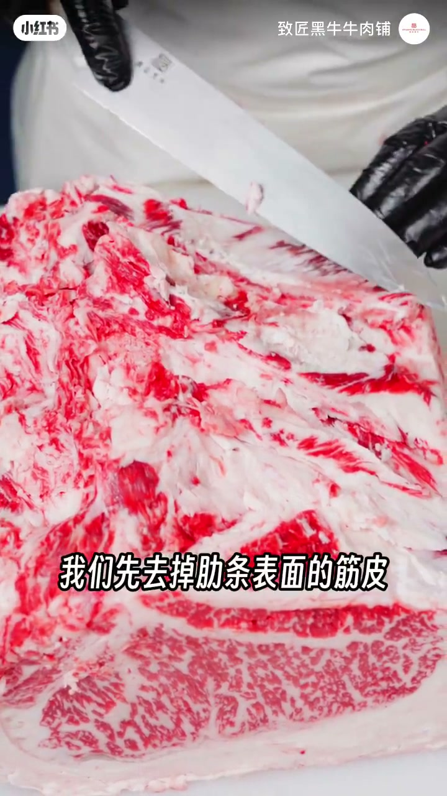
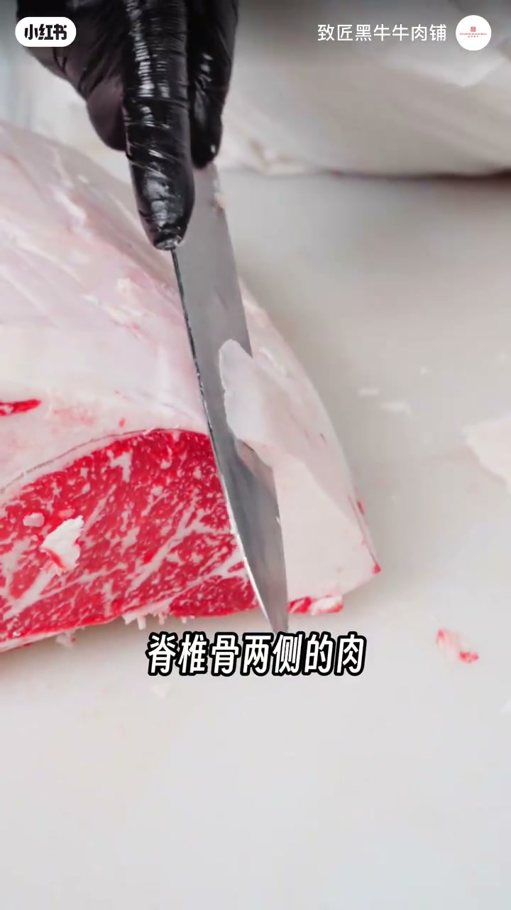
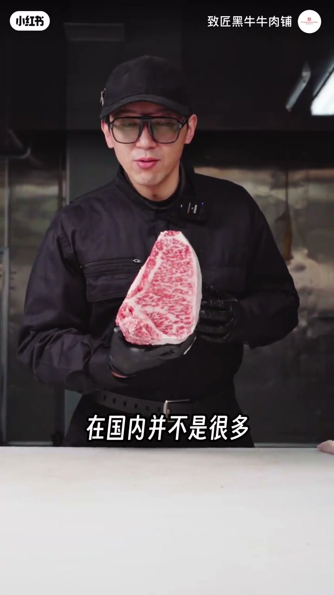
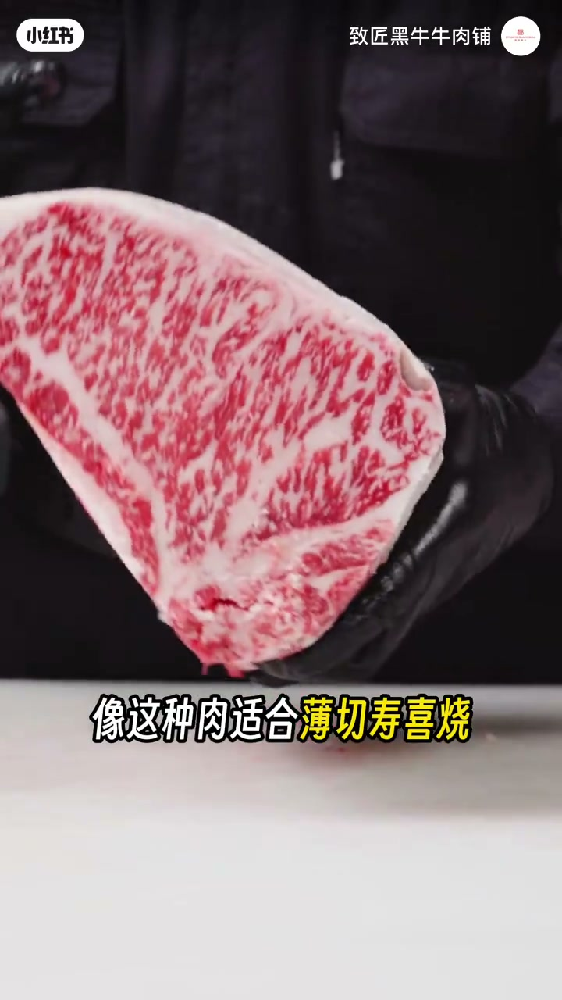

内容要点
致匠黑牛把西冷（口播作「吸冷」）称为牛身上最值钱的三个部位之一：未分割时带着厚外膘、近眼肉端与肋条；排酸约五天油脂干裂如短期熟成。作者强调国内确有和牛，并认为「离开日本就不叫和牛」更多是农业保护叙事；这种肉适合薄切寿喜烧与厚切烤肉，当牛排可能偏腻但香度突出。
知识结构
未分割西冷带外膘、近眼肉与肋条；精修先去肋条筋皮，再修背部多余油脂。
已排酸五天，油脂干裂；西冷在脊背两侧，外油脂厚，修油要小心别伤肉。
约36个月饲养换来的品质；和牛=日本对雪花牛的称呼，海外也有和牛，保护主义故事不必当真。
薄切寿喜烧、厚切烤肉更合适；牛排可能腻但香。想印象深刻就尝尝这个等级。
西冷贵在脊背两侧的厚脂雪花与长期饲养成本；精修成败看修油是否伤到净肉。名字争论（是否「配称和牛」）不影响你在锅里感受到的爆汁与奶香——那是等级与分割共同决定的。
00:00-00:47未分割的西冷：外膘、近眼肉、肋条全在
开场：「这就是牛身上最值钱的三个部位之一。」镜头给出还没分割的西冷（ASR常写作「吸冷」）：外膘油、靠近眼肉的部分、肋条部分全都带着。精修第一步——去掉肋条表面的筋皮，再把背部多余油脂全部修掉；表面风干来自排酸柜风机。


00:47-01:30排酸五天：油脂干裂，修油要手下留情
这块西冷已经排酸了五天，「所以油脂非常的干……已经成干裂的状态，类似于短期熟成」。解剖上，西冷位于牛脊背处，「可以理解为脊椎骨两侧的肉」，外面油脂非常厚；北方天冷时牛预寒，外油脂更重，「修油要非常的小心」，刀口下深就会伤到里面的肉、影响品相。

01:30-02:4136个月换一块肉：和牛之名与吃法
修完展示西冷中段与靠近眼肉的一端，有一块「霉」边令人似曾相识。作者说这头牛饲养了36个月零若干，「用了这么长的时间换来了这样一块肉，其实是值得的」；像这种品质在国内并不多，「这是国产和牛」。
针对「国内有没有和牛」的争议：他指出澳洲、美国、阿根廷、南非全部都有和牛；和牛是日本对当地牛种的称呼，也就是雪花牛肉。日本人认为离开日本本土就不叫和牛——「其实是一个农业保护，这个只不过是故事罢了，大家就不要特别当真」。
风味词「爆汁、入口即化、奶香味」他认为真能从这种等级上吃出来；适合薄切寿喜烧、厚切烤肉，牛排可能腻一些但香度不错。「想吃一块能让你印象深刻的肉，还得尝尝这个东西。」


完整转录（22段）
以下文本由 Whisper medium 模型自动转录，可能存在少量识别误差，已尽可能修正。
这就是牛身上最值钱的三个部位之一
这是一块还没有经过任何分割的吸冷 我们可以看一下
外标油 这个是靠近眼肉的部分 以及这是肋条的部分 全部都带 接下来呢 我们要把这块肉进行精修
精修吸冷的第一步 我们先去掉肋条表面的筋皮
修掉这些筋皮和杂油之后 我们把背部的多余油脂全部修掉 表面风干是因为排酸骨风机的原因
这块吸冷已经排酸了五天
所以油脂非常的干 我们可以能看得到这个油脂都已经成干裂的状态 类似于短期熟成
吸冷是为于牛脊背处 你可以理解为脊椎骨两侧的肉 所以它外面的油脂是非常厚的
因为牛的预含能力是非常的强 所以在北方天气冷的时候 外面油脂非常的重的 修油要非常的小心
因为如果不小心 刀口下的深就会伤到里面的肉 影响牛肉的品相 我们来看一下它修完了之后是什么样子
这个是吸冷中段 这边是吸冷这边
这边是靠近眼肉这边 看看是不是似曾相识 因为这里有一块霉
这头牛我们饲养了36个月零 用了这么长的时间换来了这样一块肉 其实是值得的
像这种品质的肉 在国内并不是很多 这个是国产和牛
当然吧 很多人不认可国内有和牛 但是这是事实 一向澳洲 美国 阿根廷 南非全部都有和牛
和牛呢 是日本对当地牛种的一个称呼 就是雪花牛肉嘛
日本人认为
脱了日本本土的牛肉都不叫和牛 其实是一个农业保护 这个只不过是故事罢了 大家就不要特别当真
那些爆汁 入口即化 奶香味十足等的词 都是从这种等级的牛肉上出来的
它真的是有这些风味 像这种肉适合薄切受起烧
后切烤肉 但是牛排的话可能会腻一些 不过香度是非常不错 如果你喜欢吃香的 这块肉一定颠覆你对牛肉的认知
所以兄弟们 想吃一块能让你印象深刻的肉 还得尝尝这个东西